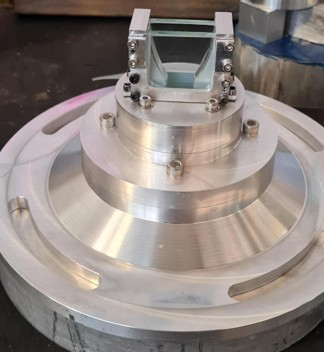

Role
- Developing experimental methods for nozzle heat transfer and performance measurements.
- Designing test articles, cooling approaches and instrumentation for combustion evaluation.
- Analyzing results to inform future nozzle design and propulsion system improvements.
Technical focus
Thermal analysis
Examining cooling strategies and temperature distribution under representative flow conditions.
Nozzle performance
Measuring thrust, expansion behaviour and flow efficiency for experimental glass-planar nozzle geometries.
Experimental validation
Using schlieren imaging and SPOD to compare flow physics with analytical and CFD predictions.
Process & visuals

Investigate
Examined glass-walled planar nozzle geometry and cooling concepts before building the test apparatus.

Experiment
Built test articles and used schlieren imaging to investigate FSS/RSS and flow behaviour.

Analyze
Performed SPOD analysis to identify feedback mechanisms and underlying aerodynamic modes.
Media gallery
Project story
Scope
Created a glass planform nozzle to investigate flow separation and feedback in overexpanded conditions.
Image
Captured schlieren images and CFD results to compare FSS/RSS behaviour with expected flow physics.
Analyze
Used modal and feedback analysis to understand how the nozzle behaves under varying operating conditions.
Current status
- Test apparatus design is complete and measurement systems are being commissioned.
- Prototype nozzles are being fabricated for upcoming evaluation campaigns.
- Data collection plans are in place for iteration and performance refinement.